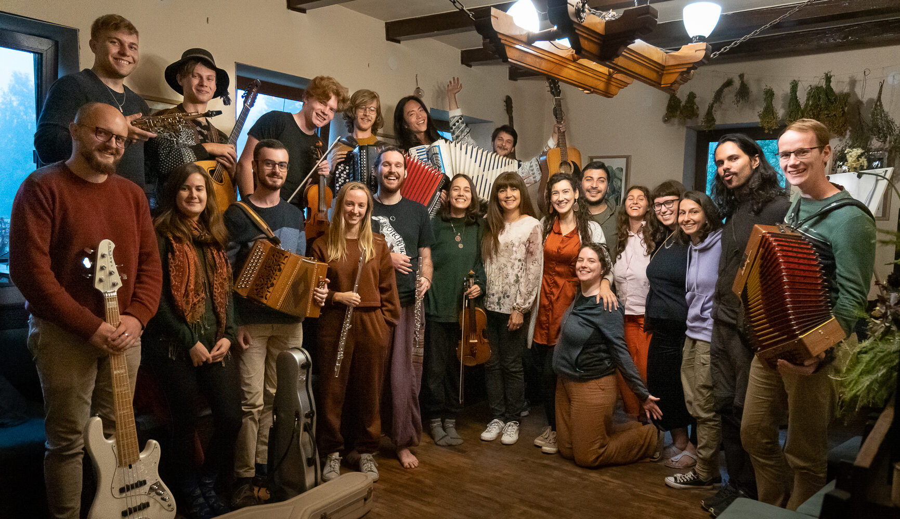

An independent non-governmental organisation incorporated for public benefit. We bring Bulgarian folklore and world music to a new generation — through festivals, concerts, education and exchange across Bulgaria and abroad.
Support our work →The Outhentic Foundation is an independent non-governmental organisation incorporated for public benefit. It is focused on preserving, distributing and promoting world music and folklore — traditions both in Bulgaria and abroad. Its purpose is to advance the process of building spiritual values and to enrich young people's musical culture.
Since 2020, the Outhentic Foundation is a member of the global network of NGOs — JM International (JMI).
Founded in 1990 in Falun, Sweden, ETHNO is a programme of Jeunesses Musicales International — the world's largest youth music NGO. It is now represented in over 40 countries and brings together musicians aged 16–30 to revive, strengthen and share global traditional musical heritage.
The Outhentic Foundation is exclusively authorised by JMI to organise and manage all ETHNO events in Bulgaria. The first edition of ETHNO Bulgaria took place from 31 August to 11 September 2023 at "The Composers" hut on Vitosha mountain near Sofia.
Twelve days of workshops, jam sessions and concerts where every participant teaches and learns from the others — culminating in a final concert that streamed live and was captured on film by photographer and videographer Pierre Chesneau.
ETHNO Bulgaria is supported by the National Culture Fund, Sofia Municipality, Musicautor, Ethno World and JM International, with Bulgarian National Radio as media partner.
Funded by the Plovdiv 2019 Municipal Foundation and the Ministry of Culture of the Republic of Bulgaria, World Festival 2019 was part of the official programme of Plovdiv — European Capital of Culture.
In the heart of Plovdiv, the stage of the Ancient Stadium of Philippopolis came alive with passionate tango pieces by Tango Cats (Orlin Tsvetanov, Zornitsa Tsvetanova, Mladen Taskov), skilfully blended with the flamenco rhythms of fusion group DelPadre (Hristo Kolikov, Tsvetan Andreev, Simeon Leonidov, Zhivko Vasilev, Stoyan Yankulov-Stundzhi).
The folkloric motifs, elegantly intertwined with the sophisticated style of jazz by the ethno-jazz band Outhentic, put the final touch on a multi-genre celebration of culture.
Your donation funds ETHNO Bulgaria — our flagship festival of traditional music for young musicians from around the world — and the Foundation's wider work bringing folklore to new audiences. Bank details below; every contribution counts.
If you are an institution, sponsor or organisation interested in supporting the Foundation's work, organising a residency, sharing a stage or co-producing a project — we would love to talk.
Write to us at info@outhentic.eu or call.
Get in touch →{kind=link}
{kind=link}
{kind=link}